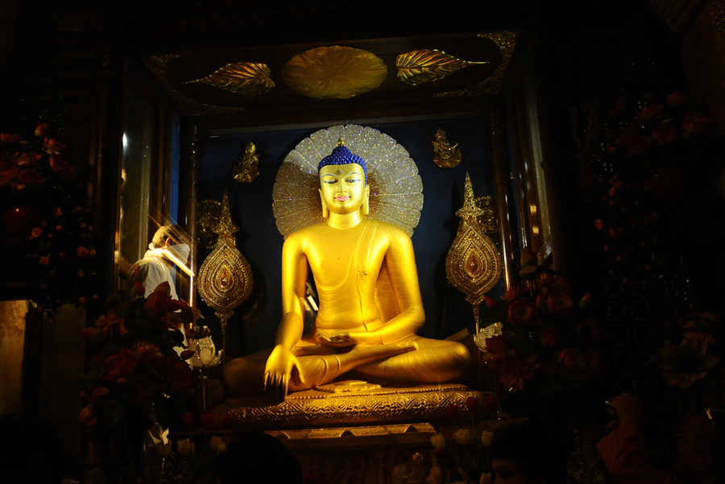
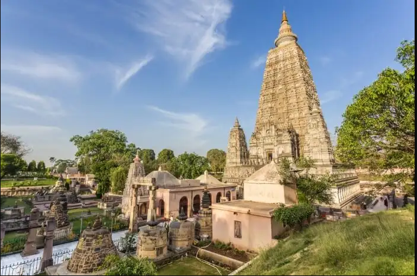
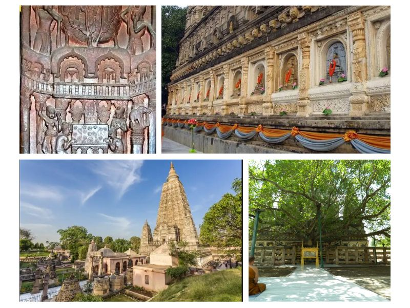

<!DOCTYPE html>
<html lang="en">
<head>
    <meta charset="UTF-8">
    <meta http-equiv="X-UA-Compatible" content="IE=edge">
    <meta name="viewport" content="width=device-width">
    <title>Document</title>
    <script>
        function getPics() {} //just for this demo
        const imgs = document.querySelectorAll('.gallery');
        const fullPage = document.querySelector('#fullpage');
        
        imgs.forEach(img => {
          img.addEventListener('click', function() {
            fullPage.style.backgroundImage = 'url(' + img.src + ')';
            fullPage.style.display = 'block';
          });
        });

        $('img[eng]').addClass('eng').click(function(){
    var src = $(this).attr('src');
    $('<div>').css({
        background: 'RGBA(0,0,0,.5) url('+src+') no-repeat center',
        backgroundSize: 'contain',
        width:'100%', height:'100%',
        position:'fixed',
        zIndex:'10000',
        top:'0', left:'0',
        cursor: 'zoom-out'
    }).click(function(){
        $(this).remove();
    }).appendTo('body');
});
        </script>
</head>
<body>
    
</body>
</html>
<style>
    
nav {
    background-color: rgb(187, 186, 186);
    color: black;
  position: relative;
  padding-bottom: 12px;
}
nav.line {
  height: 2px;
  position: absolute;
  bottom: 0;
  margin: 10px 0 0 0;
  background: #d10d34;
}
nav ul {
    
  padding: 0;
  margin: 0;
  list-style: none;
  display: flex;
}
nav ul li {
  margin: 0 40px 0 0;
  opacity: 4;
  transition: all 0.4s ease;
}
nav ul li:hover {
    color: #d10d34;
  opacity: 1;
}
nav ul li.active {
  opacity: 1;
}
nav ul li:last-child {
  margin-right: 0;
}
nav ul li a {
  text-decoration: none;
  color: #000000;
  text-transform: uppercase;
  display: block;
  font-weight: 600;
  letter-spacing: 0.2em;
  font-size: 14px;
}


    *{
        margin: 9px 9px;
        font-family: 'Franklin Gothic Medium', 'Arial Narrow', Arial, sans-serif;
    }

   /* Add a black background color to the top navigation bar */
.topnav {
  overflow: hidden;
  background-color: #e9e9e9;
}

/* Style the links inside the navigation bar */
.topnav a {
  float: right;
  display: block;
  color: black;
  text-align: center;
  padding: 14px 16px;
  text-decoration: none;
  font-size: 17px;
}

/* Change the color of links on hover */
.topnav a:hover {
  background-color: #ddd;
  color: black;
}

/* Style the "active" element to highlight the current page */
.topnav a.active {
  background-color: #2196F3;
  color: white;
}

/* Style the search box inside the navigation bar */
.topnav input[type=text] {
  float: right;
  padding: 6px;
  border: none;
  margin-top: 20px;
  margin-right: 16px;
  font-size: 17px;
}

/* When the screen is less than 600px wide, stack the links and the search field vertically instead of horizontally */
@media screen and (max-width: 600px) {
  .topnav a, .topnav input[type=text] {
    float: none;
    display: block;
    text-align: left;
    width: 100%;
    margin: 0;
    padding: 14px;
  }
  .topnav input[type=text] {
    border: 1px solid #ccc;
    
  }
}


#fullpage {
  display: none;
  position: absolute;
  z-index: 9999;
  top: 0;
  left: 0;
  width: 100vw;
  height: 100vh;
  background-size: contain;
  background-repeat: no-repeat no-repeat;
  background-position: center center;
  background-color: black;
}


.headline{
    height: 100px;
    width: 100%;
    font-size: 25px;
}
.image{
    height: 500px;
    width: 100%;
    border: 2px white;
    border-radius: 8px;
    
}
.image ul {
    align-content: baseline;
    
}

.container{
    display: flex;
}
.data{
    overflow: auto;
    height: 400px;
    width: 800px;
    font-size: large;
    /* border: 2px solid black;
    border-radius: 8px; */
}
/* .gallary{
    height: 400px;
    width: 660px;
    border: 2px solid black;
    border-radius: 8px;
} */
.photo1{
    height: 400px;
    width: 60%;
    /* border: 2px solid black;
    border-radius: 8px; */
    float: right; 
}
/* .short{
    position: absolute;
    top: 1500px;
    height: 400px;
    width: 26%;
    border: 2px solid black;
    border-radius: 8px;

} */
.bg{
    bottom: 0px;
    height: 50px;
    width: 100%;
}

.short1{
    position: absolute;
    /* top: 1500px; */
    /* left: 420px; */
    height: 500px;
    width: 36%;
    border: 2px solid black;
    border-radius: 8px;

}
</style>
<body>
    <nav>
        <ul>
          <li class="active"><a href="">Home</a></li>
          <li><a href="">About</a></li>
          <li><a href="">Contact Us</a></li>
        </ul>
    </nav>
    <div class="address">
        <br>
       <h3>Home/Pilgrimage/Mahabodhi Temple</h3> 
    </div>
    <br>
    <div class="headline">
        <h1>Mahabodhi Temple</h1>
    </div>
    <div class="image">
        
    </div>
    <br><br><br><br><br><br>
    <div class="container"> 
    <div class="data">
        <p>Do you Bihar is one of the major states from where Buddhism has emerged? Mahabodhi Temple in Bodh Gaya is one of the major Buddhist temples in India. It is one of the top tourist destinations in Bihar ,attracting people from all around the world. It is also a recognized UNESCO World Heritage Site. It is the best place to find calm and solace. You will totally be mesmerized by this peaceful holy place. Here is our full guide to Mahabodhi Temple Bodhgaya, which will help you to know more about the place.
           You must have heard about Lord Buddha getting enlightenment under the Bodhi tree. This temple is a major pilgrimage site and there is Bodhi Tree here . Emperor Ashoka was the first one to mark this important religious site. Later a temple was built in the 2nd century at this place. It was in the year 1949, that this temple was recognized as a Buddhist Holy Place under the Bodhgaya Act.
        <br><br>
        Besides the main shrine of Buddha made of black stone and painted in gold, there is a lot to explore in Mahabodhi Temple Complex. One of the most sacred places here is the Bodhi Tree which lies exactly behind the shrine. Apart from this, there is also a pond in the south of the complex where it is believed that Buddha used to take a bath. In the northeast area, there is Ratanaghara or the Jewel House which draws the main attention of tourists. There are several stupas and trees on the complex of the temple.
        <br><br>
        The months between November – February are the best ones to visit the temple as the weather is moderate.

The temple remains open from 5 in the morning to 9 at night every day. Moreover, there is also a chanting session that takes place at 5:30 am and at 6 pm. There is no fee for entry to the temple. However, they do charge INR 100 for cameras and INR 300 for video cameras. For meditation park, you might have to pay a minimal fee for entrance and it is open from sunrise to sunset.

Further, electronic devices and mobile phones are not allowed inside the temple to maintain peace on the premises. The devices can be left at the baggage counter which is located at the entrance.
 Definitely the best place to do meditation and connect to the divine himself.

        </p>
    </div>
    <div class="gallary">
        
        <ul>
            <li>Distance From Bhagalpur: 253 Kms</li>
            <li>Via NH33</li>
        </ul>
        <div id="fullpage" onclick="this.style.display='none';"></div>
    </div>
        </div>
        
        <div class="photo1">
            <div class="mapouter"><div class="gmap_canvas"><iframe class="gmap_iframe" width="100%" frameborder="0" scrolling="no" marginheight="0" marginwidth="0" src="https://maps.google.com/maps?width=600&amp;height=500&amp;hl=en&amp;q=Mahabodhi temple&amp;t=h&amp;z=11&amp;ie=UTF8&amp;iwloc=B&amp;output=embed"></iframe><a href="https://capcuttemplate.org/">Capcuttemplate.org</a></div><style>.mapouter{position:relative;text-align:right;width:100%;height:500px;}.gmap_canvas {overflow:hidden;background:none!important;width:100%;height:500px;}.gmap_iframe {height:500px!important;}</style></div>
        </div>

       <div class="short1">
        
       </div>
       <br><br><br><br><br><br><br><br><br><br><br><br><br><br><br><br><br><br><br><br><br><br><br><br><br><br><br>
       <br><br><br><br><br>
</body>
</html>
